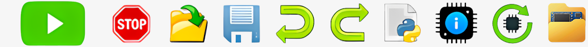

Puštěním, se zahájí načítání souboru.

ESP32
ESP32-C3
ESP32-S3
ESP8266
RP2040
RP2040 Pico:ed
＋ Nový
x
x
Uložit soubor do PC
Správce doplňků
×
Sem přetáhni *.newblk soubory
▾
☰
Automaticky spustit
Otevřít projekt z PC
Uložit do PC
Nahrát Firmware do zařízení
Nastavit zobrazení bloků
Správce doplňků
Aplikace Bluetooth joystick
Verze:
v